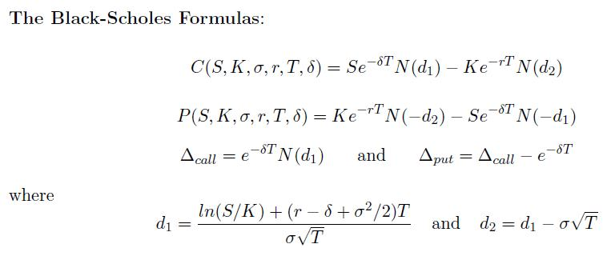

柏力克-舒爾斯期權定價(II)
程式參考了網友roviury意見進行修改。
更新日期: 2010年5月1日
程式會依照下列公式，輸入S, K, σ(%), r(%), T, δ(%)，計算Δcall, Δput, C 及 P。

程式需要在 REG Quad 模式下執行，因此在輸入程式前請先按 Mode Mode 2 → 3 進入REG Quad模式。
注意: 藍色的英文字為統計模式中的變數(Σx3 按 Shift 1 → → 1，Σy 按 Shift 1 → 2，Σxy Shift 1 →3)，而3√是按shift x3， e是按shift ex。
程式 (245 bytes)
Stat clear: ?→M: 3√(M - 1 DT: ?→M: 1 , M DT: ?→M: ?→D:
0 , E - 2D - Σy DT: E -2M→M: ?→X: ?→Y: E -2Y→Y:
( ln Σx3┘Σxy + ( Σy - Y + M2 ÷ 2) X ) ÷ M√X→A:
Ans - M√X→C: 0→B: Lbl 2: M→D: 1 ÷ (1 + . 231642 √A2:
E - 7 √e - A2 ( 1274148Ans - 1422484Ans2 + 7107069Ans3 -
7265760Ans^4 + 5307027Ans^5→M: A>0 => 1 - M→M: C→A:
B=0→B => Goto 2: De - YX→A◢ Ans - e - YX◢
Σx3A - ΣxyMe - Σy X◢ Ans - Σx3 e -YX + Σxy ÷ e X Σy
例題: S=50, K=40, σ=30%, r=8%, T=1, δ=10%, 求Δcall, Δput, C 及 P。
按 Prog 1 再按 50 EXE 40 EXE 30 EXE 8 EXE 1 EXE 10 EXE (顯示Δcall為0.720180647)
EXE (顯示Δput為 - 0.18465677) EXE (顯示C為10.1265606) EXE (顯示P為1.809343554)